원하는 스타일 클릭 → 📋 프롬프트 복사 → 노트북LM 슬라이드 자료 맞춤설정 → 설명 칸에 붙여넣기
사용 방법
① 원하는 스타일 카드 클릭
② 📋 프롬프트 복사 클릭
③ 노트북LM → 스튜디오 → 슬라이드 자료 → 설명 칸에 붙여넣기
🎨
TIP슬라이드 디자인 스타일 5종 — 설명 칸 교체용
슬라이드 자료 맞춤설정 → 설명 칸▼
위 슬라이드 생성 프롬프트의 "디자인:" 부분을 아래 스타일 중 하나로 교체하면 분위기가 완전히 달라집니다.
🚀
STYLE 01
미니멀 테크 — 토스·애플 스타일
다크·세련▲
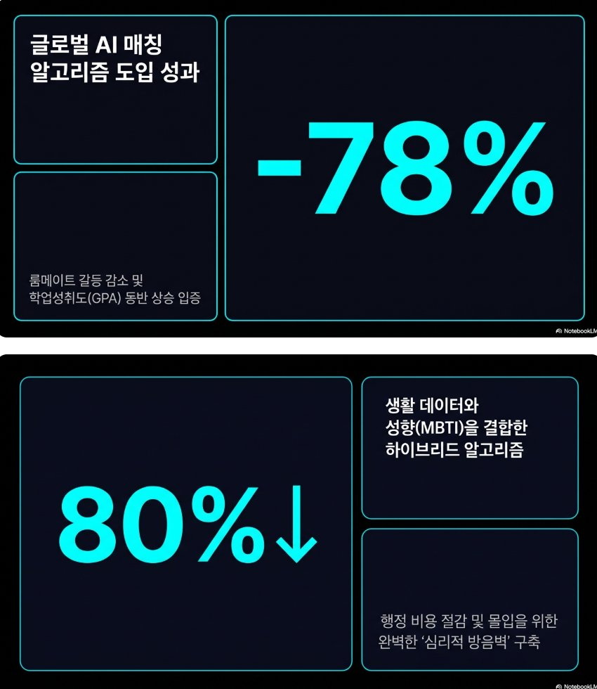
[슬라이드 구성] 해당 소스에 작성된 슬라이드 제작 가이드를 참고합니다.
디자인: Ultra-minimalist dark tech presentation, Silicon Valley VC pitch style,
bold oversized typography, single neon accent color on black background,
Bento grid layout, high-end corporate aesthetic, stark contrast --ar 16:9
색상: 순수 검정 or 딥 네이비 배경 + 네온 포인트 1색
텍스트: 슬라이드당 3줄 이내, 핵심 수치 화면 40% 이상 강조
언어: 한국어, 한글 깨짐 없이
✏️
STYLE 02
비주얼 스토리텔링 — 카드뉴스 스타일
밝고 친근▲
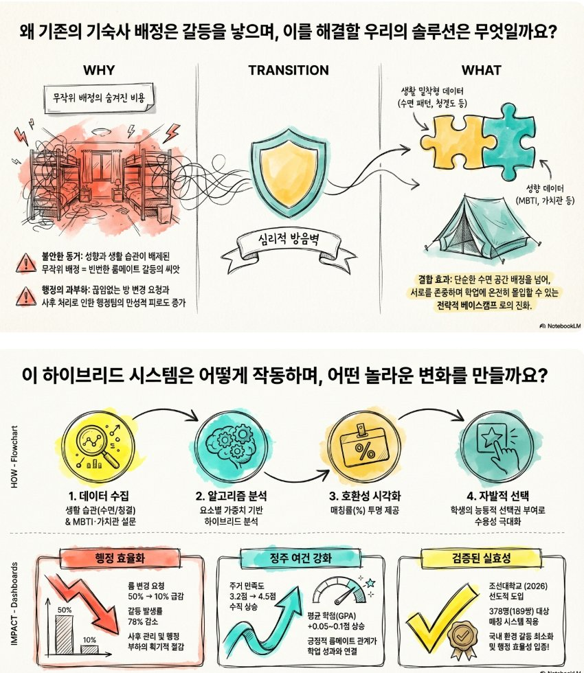
[슬라이드 구성] 해당 소스에 작성된 슬라이드 제작 가이드를 참고합니다.
디자인: Hand-drawn sketch note illustration style, warm and friendly visual storytelling,
watercolor texture accents, organic shapes and loose linework,
editorial infographic layout, approachable and engaging --ar 16:9
색상: 밝은 크림 배경 + 노랑·청록·코랄 포인트
텍스트: 각 슬라이드 제목은 질문 형태, Why → What → How 흐름
언어: 한국어, 한글 깨짐 없이
🎓
STYLE 03
TED-Ed 교육 스타일
교육·강의▲
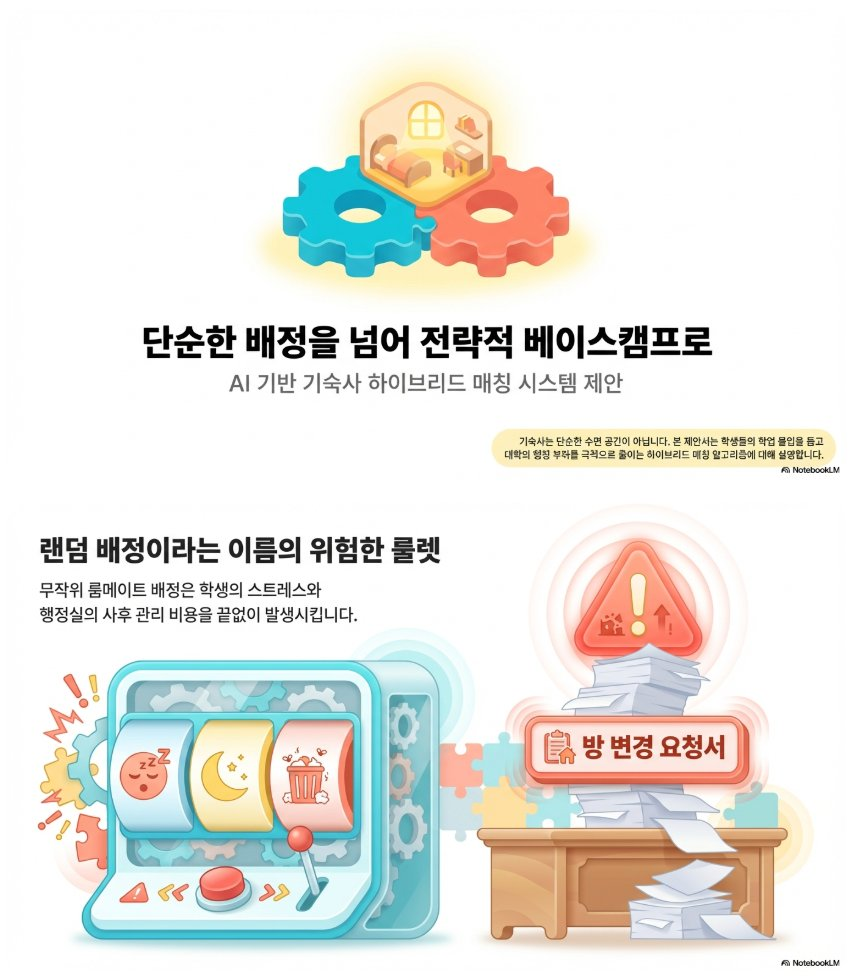
[슬라이드 구성] 해당 소스에 작성된 슬라이드 제작 가이드를 참고합니다.
디자인: TED-Ed animation style, flat vector illustration, bright warm color palette,
friendly and educational infographic, clean rounded shapes,
step-by-step visual storytelling, Hook-Teach-Apply structure --ar 16:9
색상: 밝고 따뜻한 팔레트 (노랑·청록·코랄), 흰 배경
텍스트: 어려운 개념은 일상적 비유로, 발표자 노트 포함
언어: 한국어, 한글 깨짐 없이
🎮
STYLE 04
게이미피케이션 — 게임 HUD 스타일
다크·임팩트▲
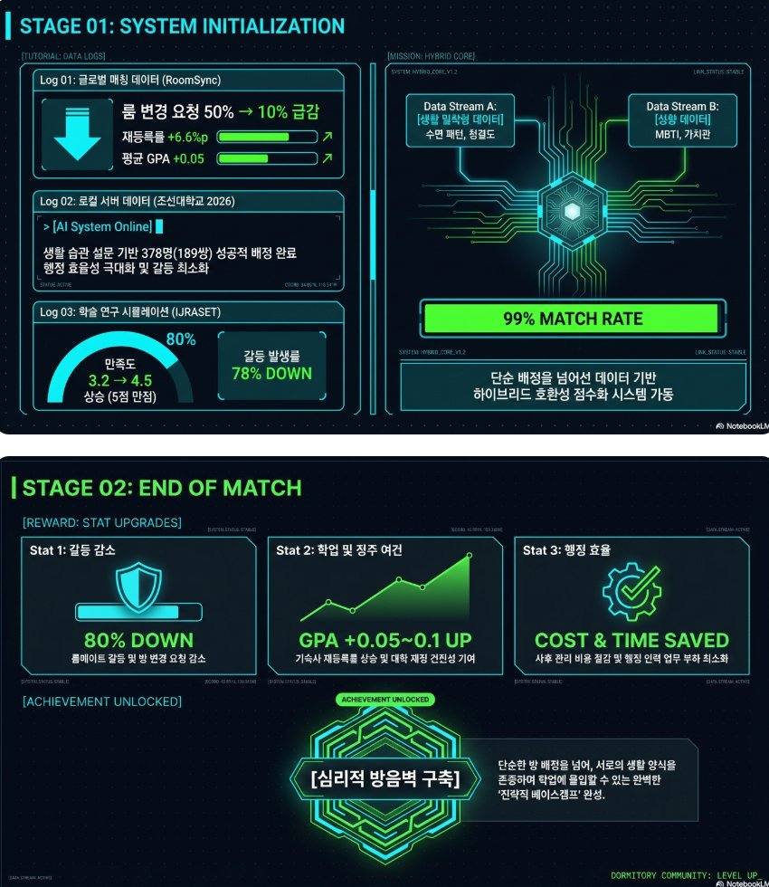
[슬라이드 구성] 해당 소스에 작성된 슬라이드 제작 가이드를 참고합니다.
디자인: Game HUD interface design, cyberpunk UI aesthetic,
neon teal glowing elements on dark background,
level-up progression system, futuristic dashboard layout,
achievement badges and progress bars --ar 16:9
색상: 순수 다크 배경 + 형광 청록·초록 포인트
텍스트: STAGE 01, STAGE 02 순서 넘버링, 튜토리얼→미션→보상 구조
언어: 한국어, 한글 깨짐 없이
📰
STYLE 05
저널리즘 — 뉴욕타임스 스타일
신뢰·데이터▲
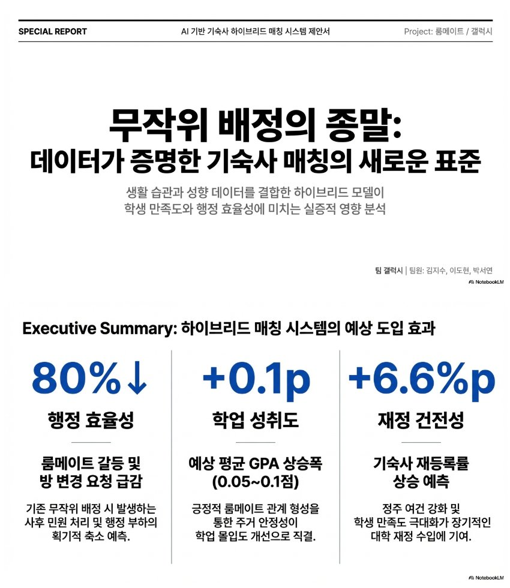
[슬라이드 구성] 해당 소스에 작성된 슬라이드 제작 가이드를 참고합니다.
디자인: New York Times data journalism style, clean editorial infographic,
black and grey grid layout with one accent color, authoritative sans-serif typography,
evidence-based data visualization, newspaper aesthetic --ar 16:9
색상: 흰 배경 + 검정·회색 + 강조색 1개
텍스트: 객관적이고 권위 있는 어조, 수치·비교 데이터 중심
언어: 한국어, 한글 깨짐 없이
📊
STYLE 06
비즈니스 미니멀 — 타임라인 인포그래픽
깔끔·기업형▲
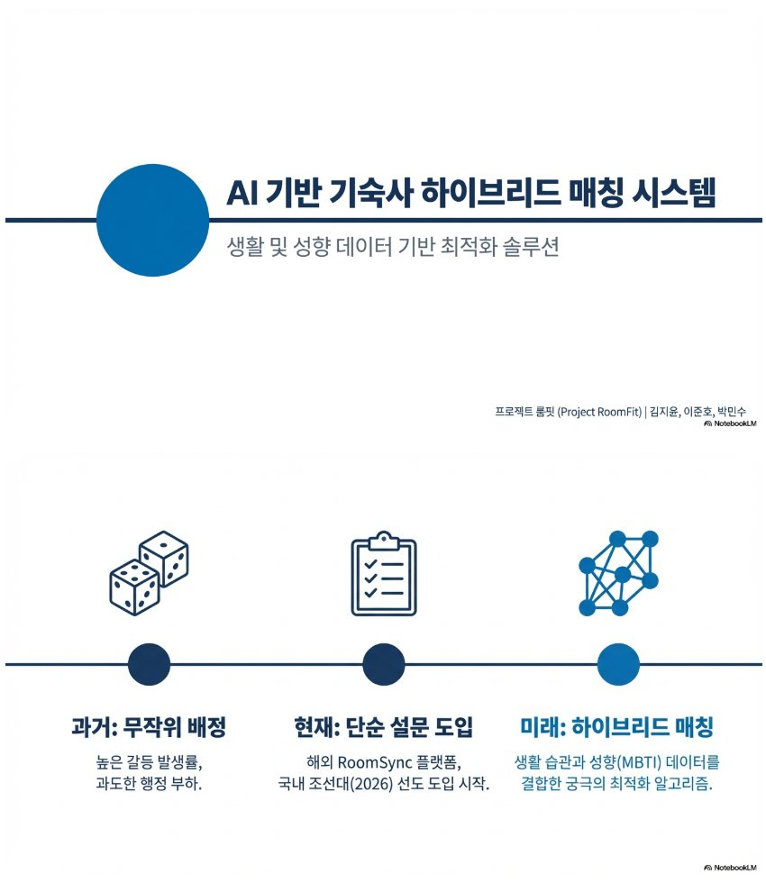
[슬라이드 구성] 해당 소스에 작성된 슬라이드 제작 가이드를 참고합니다.
디자인: Minimalist timeline infographic, simple flat vector art,
clean data visualization, geometric shapes,
corporate color palette, white background, highly legible
색상: 흰 배경 + 기업 컬러 포인트 1~2색
텍스트: 타임라인·단계별 흐름 구조
언어: 한국어, 한글 깨짐 없이
💻
STYLE 07
도스/터미널 — 레트로 해커 스타일
터미널·레트로▲
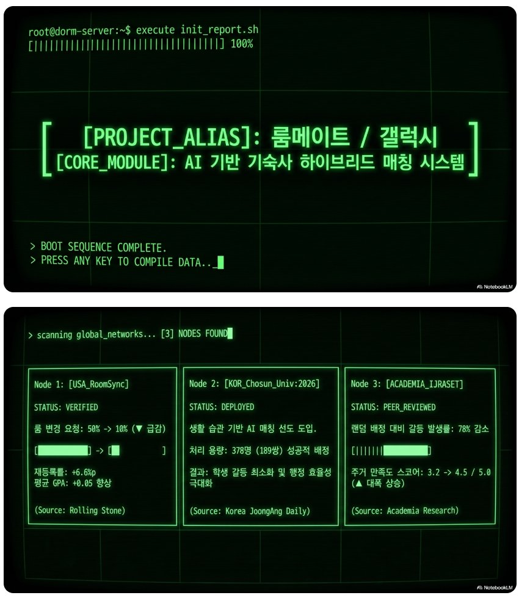
[슬라이드 구성] 해당 소스에 작성된 슬라이드 제작 가이드를 참고합니다.
디자인: Retro CRT monitor screen, Matrix green text on black background,
glowing phosphor, terminal code,
vintage hacker aesthetic, scanlines
색상: 순수 검정 배경 + 매트릭스 녹색 텍스트
텍스트: 터미널 명령어 스타일, 타이핑 느낌
언어: 한국어, 한글 깨짐 없이
🧊
STYLE 08
복셀(3차원 픽셀) 아트 스타일
3D·큐트▲
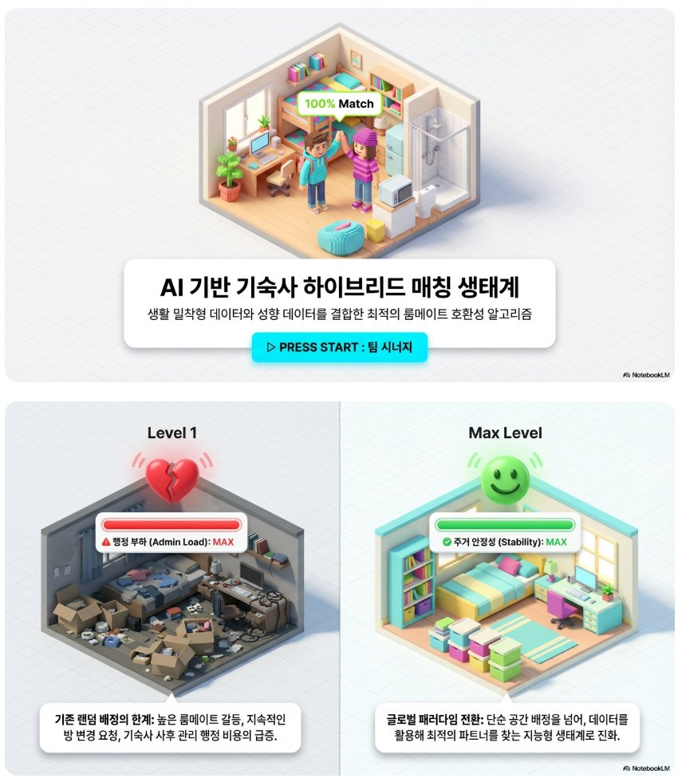
[슬라이드 구성] 해당 소스에 작성된 슬라이드 제작 가이드를 참고합니다.
디자인: Isometric voxel art, gamified office environment,
highly detailed blocks, bright lighting,
colorful pixel 3D, cute architectural diagram
색상: 밝고 컬러풀한 팔레트, 입체 블록 느낌
텍스트: 게임 UI 스타일 라벨
언어: 한국어, 한글 깨짐 없이
🏺
STYLE 09
클레이 애니메이션 스타일
3D·귀엽▲
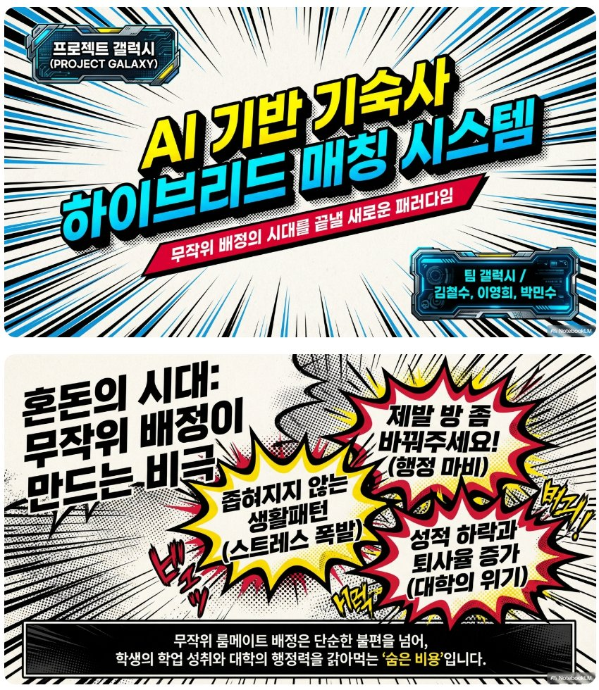
[슬라이드 구성] 해당 소스에 작성된 슬라이드 제작 가이드를 참고합니다.
디자인: Claymation style, tactile 3D illustration,
cute office worker figurine, soft smooth lighting,
playful stop-motion aesthetic, vibrant pastel colors
색상: 부드러운 파스텔 계열, 클레이 질감 3D 오브젝트
텍스트: 둥글고 귀여운 폰트 느낌, 장면 설명 스타일
언어: 한국어, 한글 깨짐 없이
⚡
STYLE 10
역동적(하이 옥탄) 애니메이션 스타일
애니·역동▲
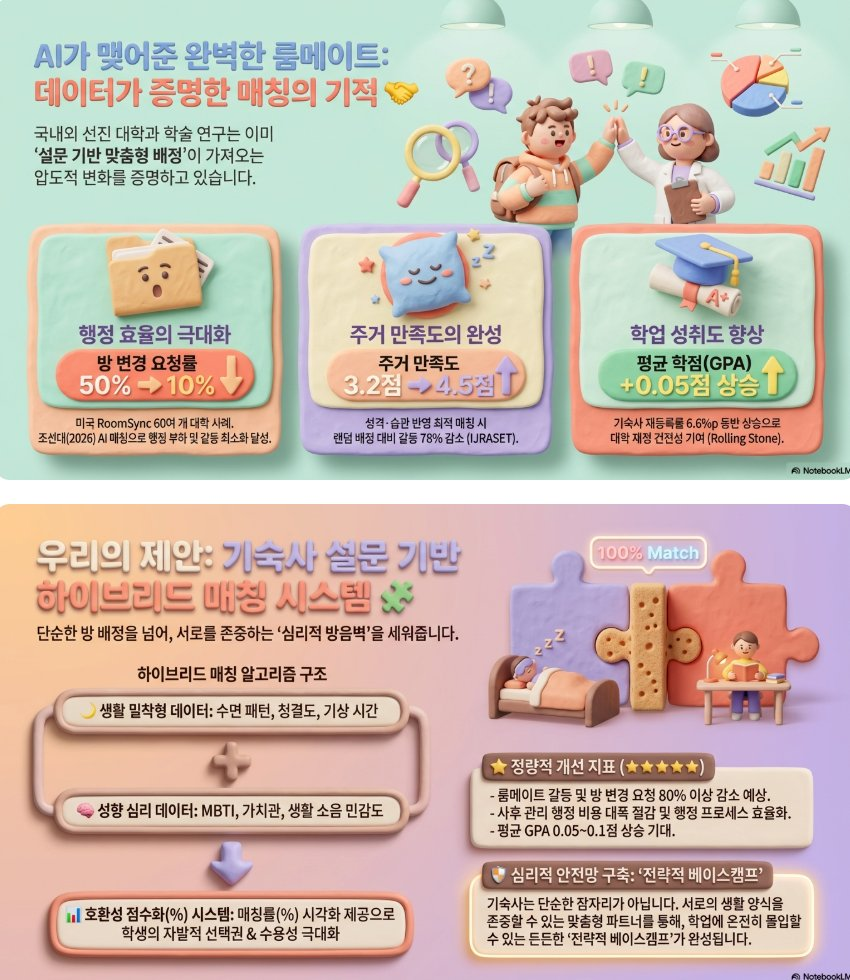
[슬라이드 구성] 해당 소스에 작성된 슬라이드 제작 가이드를 참고합니다.
디자인: High-octane anime style, intense dynamic action,
speed lines, high energy, dramatic lighting,
vivid colors, epic perspective
색상: 선명하고 강렬한 원색, 속도감 있는 효과선
텍스트: 굵고 강렬한 제목, 만화 말풍선 느낌
언어: 한국어, 한글 깨짐 없이
🌸
STYLE 11
로코코(프랑스·낭만적) 스타일
빈티지·럭셔리▲
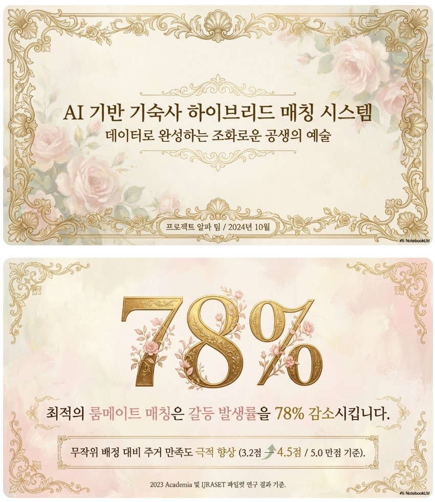
[슬라이드 구성] 해당 소스에 작성된 슬라이드 제작 가이드를 참고합니다.
디자인: Elegant Rococo style, romantic ornate aesthetic,
soft pastel oil painting, intricate gold floral details,
vintage luxury
색상: 소프트 파스텔 크림·핑크·금색 장식
텍스트: 우아하고 고전적인 세리프 분위기
언어: 한국어, 한글 깨짐 없이
💎
STYLE 12
글래스 모피즘 3D (투명) 스타일
모던·고급▲
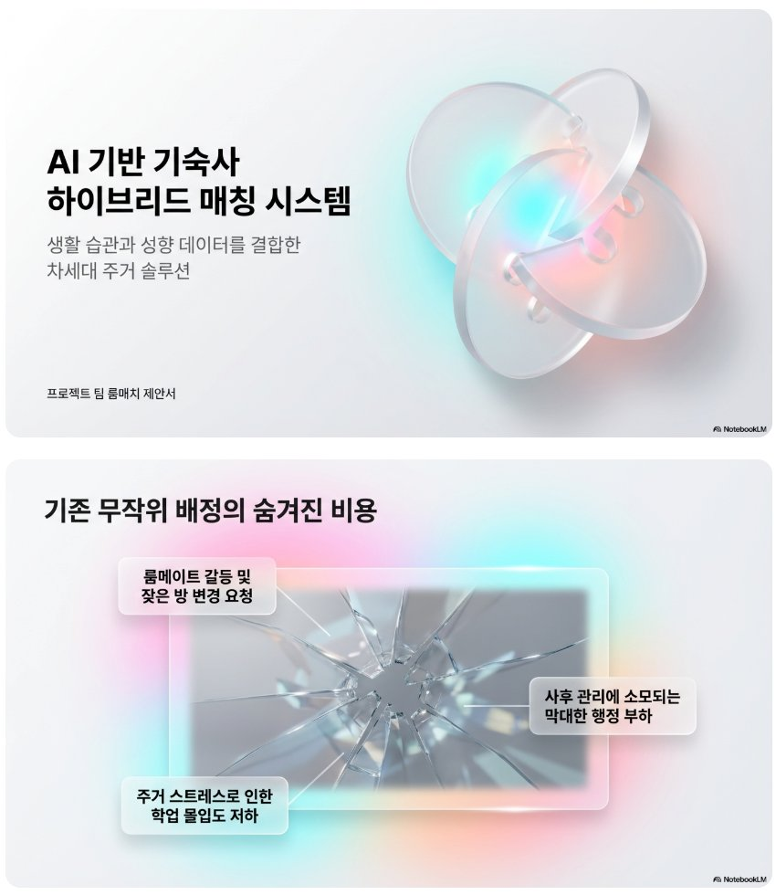
[슬라이드 구성] 해당 소스에 작성된 슬라이드 제작 가이드를 참고합니다.
디자인: 3D glassmorphism icons, frosted glass UI elements,
modern tech aesthetic, soft studio lighting,
clean white background, high-end corporate presentation style
색상: 흰/연회색 배경 + 반투명 유리 오브젝트 + 파스텔 그라디언트
텍스트: 세련된 산세리프, 투명 카드 위 배치
언어: 한국어, 한글 깨짐 없이
📄
STYLE 13
페이퍼 컷아웃 아트 스타일
핸드메이드·감성▲
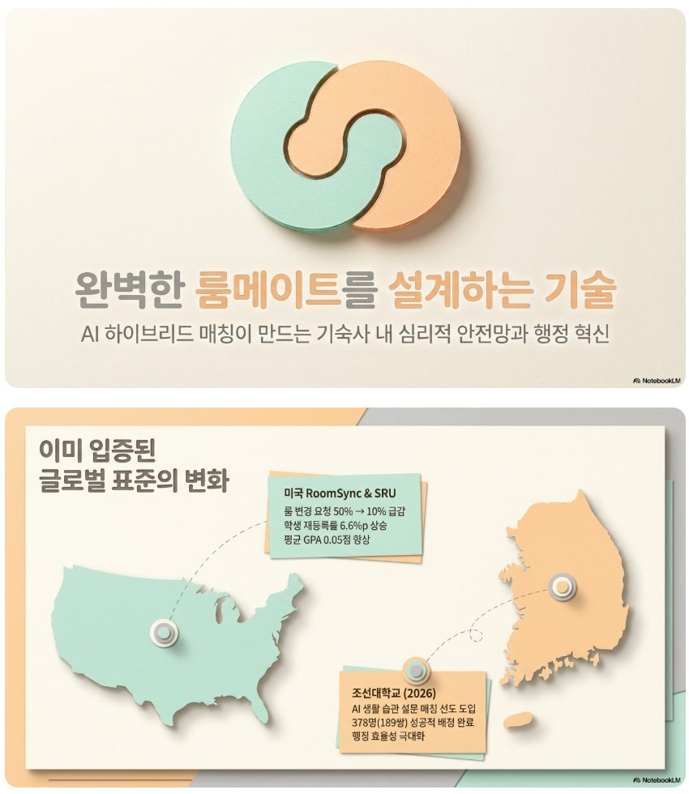
[슬라이드 구성] 해당 소스에 작성된 슬라이드 제작 가이드를 참고합니다.
디자인: Layered paper cutout art, conceptual office desk,
soft shadows, pastel colored paper,
clean and minimal storytelling, tactile texture --ar 16:9
색상: 파스텔 종이 질감, 크림·민트·살구색 레이어
텍스트: 손글씨 느낌 또는 둥근 산세리프
언어: 한국어, 한글 깨짐 없이
🚀
STYLE 14
플랫 벡터 모션그래픽 스타일
과학·교육▲
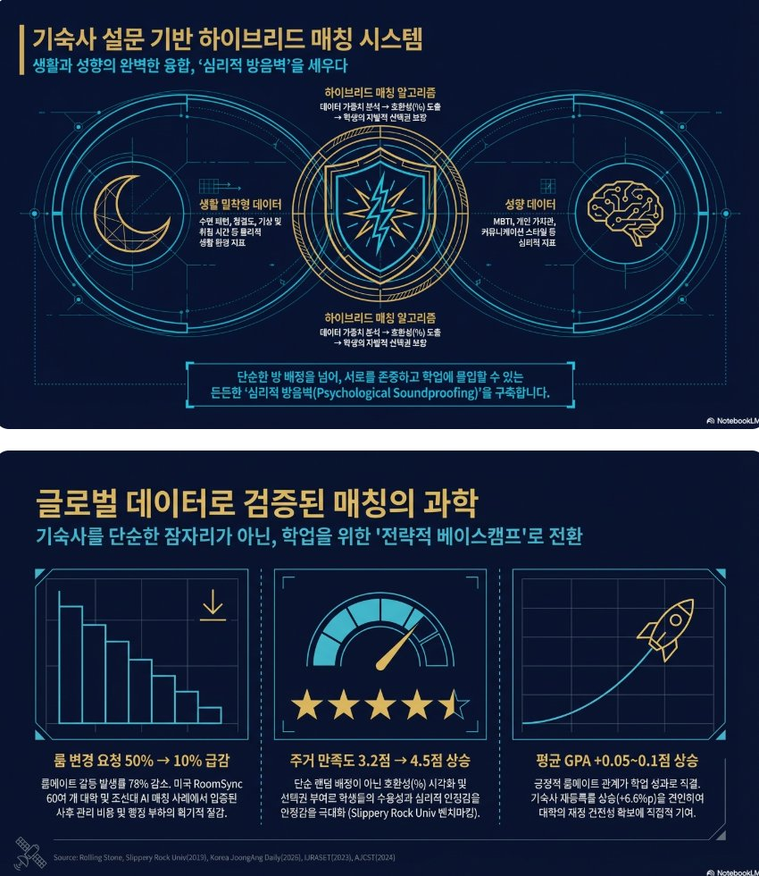
[슬라이드 구성] 해당 소스에 작성된 슬라이드 제작 가이드를 참고합니다.
디자인: Flat vector illustration, science channel aesthetic,
vibrant deep space colors, clean minimalist background,
educational infographic, highly detailed yet simplified --ar 16:9
색상: 딥 스페이스 네이비·청록·노랑 포인트
텍스트: 깔끔한 교육용 라벨, 아이콘+설명 조합
언어: 한국어, 한글 깨짐 없이
🛸
STYLE 15
시네마틱 우주 SF 다큐멘터리 스타일
영화·SF▲
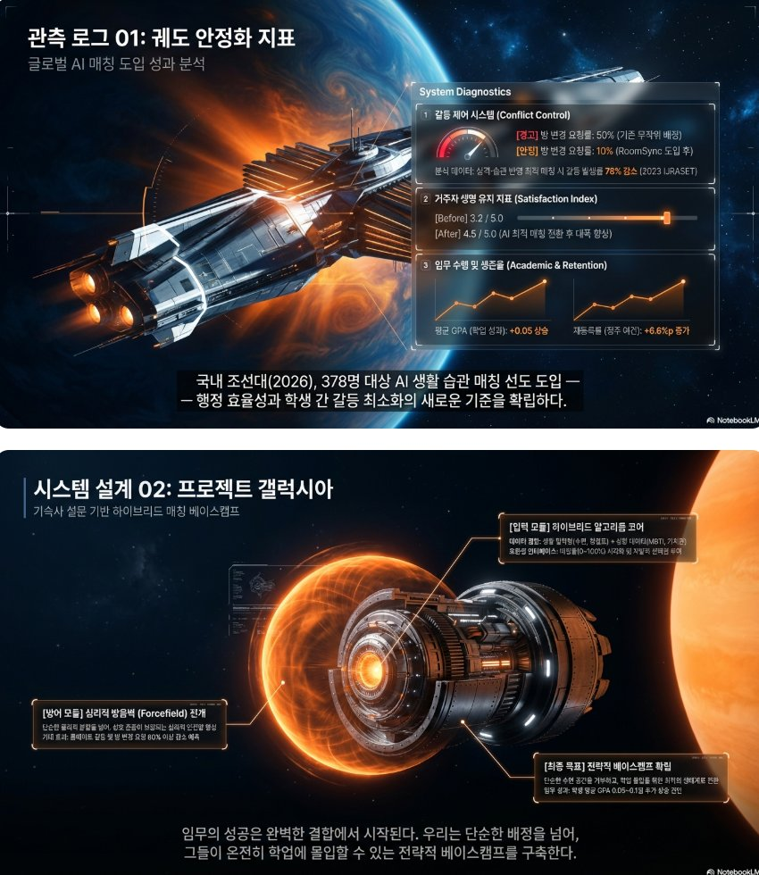
[슬라이드 구성] 해당 소스에 작성된 슬라이드 제작 가이드를 참고합니다.
디자인: Cinematic 3D render of a space station orbiting a gas giant,
hard sci-fi aesthetic, hyper-realistic, dramatic lighting,
volumetric scattering, 8k resolution, space documentary style --ar 16:9
색상: 우주 블랙·딥 블루 배경 + 오렌지·흰색 드라마틱 조명
텍스트: 영화 자막 스타일, 권위 있는 다큐 느낌
언어: 한국어, 한글 깨짐 없이
✦ 나만의 스타일 만들기 — 이미지 → 프롬프트 자동 추출 (ChatGPT/Claude에 이미지 첨부)
첨부한 이미지의 슬라이드 디자인 스타일을 분석해서,
동일한 스타일로 새 슬라이드를 제작할 수 있는
노트북LM 슬라이드 스타일 프롬프트를 작성해줘.
프롬프트에는 아래 요소가 반드시 포함되어야 해:
- 전체적인 디자인 스타일
- 톤앤매너
- 색상 팔레트
→ 노트북LM 슬라이드 자료 맞춤설정 → 설명 칸에 그대로 붙여넣을 거야.
사용법: behance.net / Pinterest에서 마음에 드는 슬라이드 캡처 → ChatGPT에 이미지 첨부 + 위 프롬프트 입력 → 결과를 노트북LM 설명 칸에 복붙